Chapter 21 Read and Write the SDcard
An SDcard slot is integrated on the back of the ESP32-S3 WROOM. In this chapter we learn how to use ESP32S3 to read and write SDcard.
Project 21.1 SDMMC Test
Component List
ESP32-S3-WROOM x1
Type C USB Cable x1
Memory Card x1
Format SD card
Before starting the tutorial, we need to create a drive letter for the blank SD card and format it. This step requires a card reader and SD card. Please prepare them in advance. Below we will guide you to do it on different computer systems. You can choose the guide that matches your computer. Windows Insert the SD card into the card reader, then insert the card reader into the computer. In the Windows search box, enter “Disk Management” and select “Create and format hard disk partitions”.
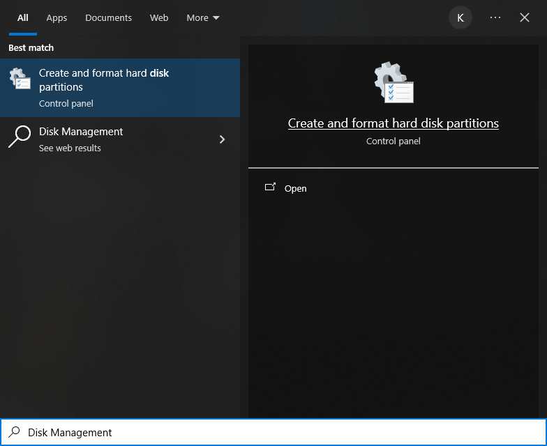In the new pop-up window, find an unallocated volume close to 1G in size.
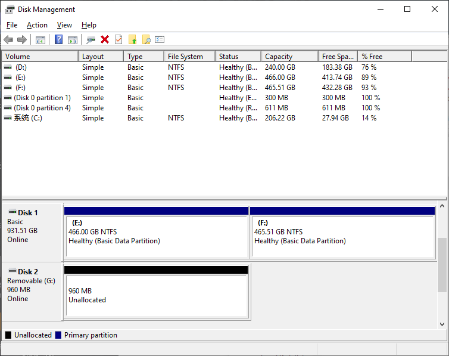Click to select the volume, right-click and select “New Simple Volume”.
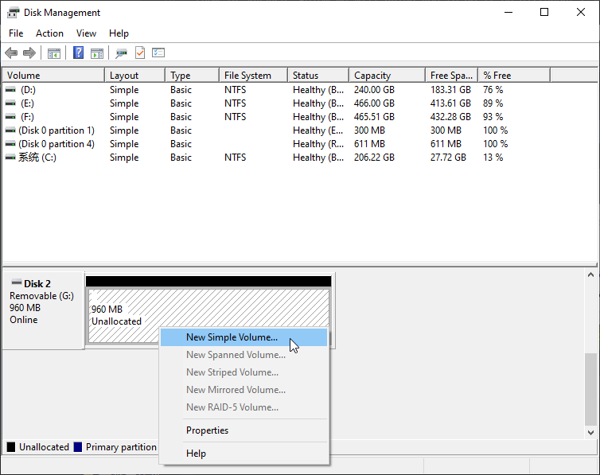Click Next.
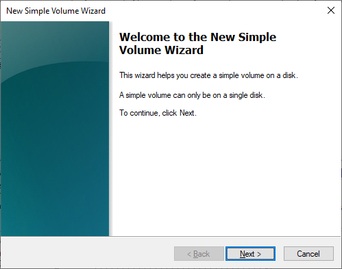 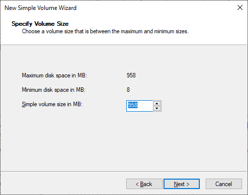You can choose the drive letter on the right, or you can choose the default. By default, just click Next.
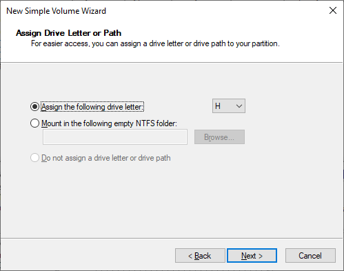File system is FAT(or FAT32). The Allocation unit size is 16K, and the Volume label can be set to any name. After setting, click Next.
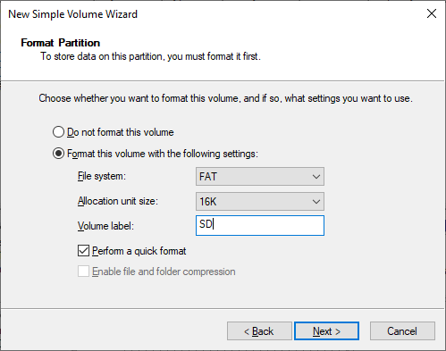Click Finish. Wait for the SD card initialization to complete.
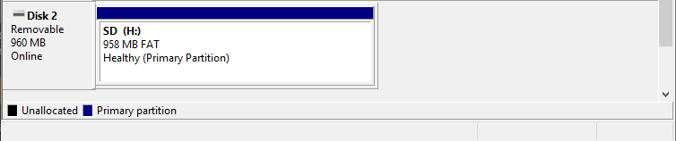At this point, you can see the SD card in This PC.
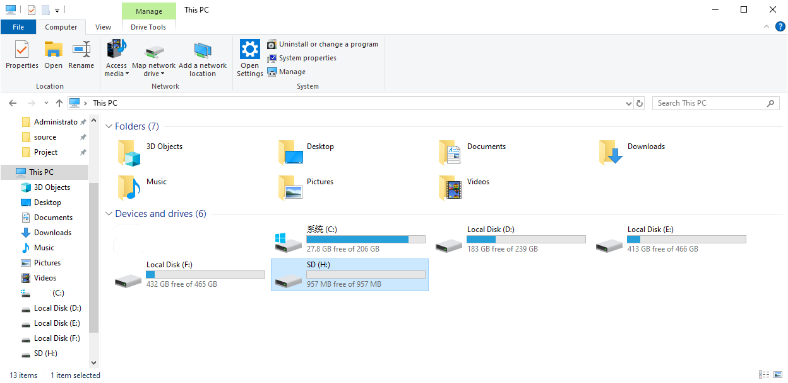MAC Insert the SD card into the card reader, then insert the card reader into the computer. Some computers will prompt the following information, please click to ignore it.
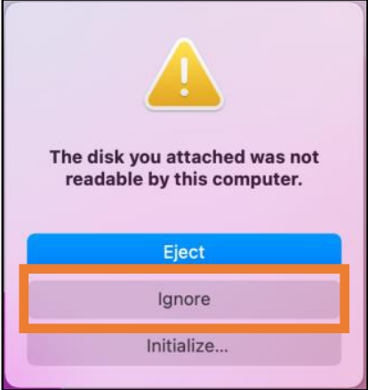Find “Disk Utility” in the MAC system and click to open it.
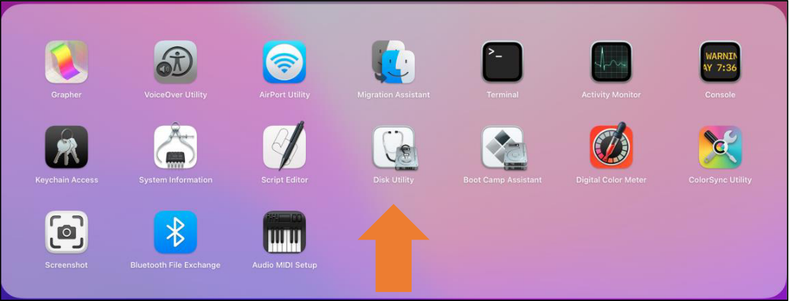Select “Generic MassStorageClass Media”, note that its size is about 1G. Please do not choose wrong item. Click “Erase”.
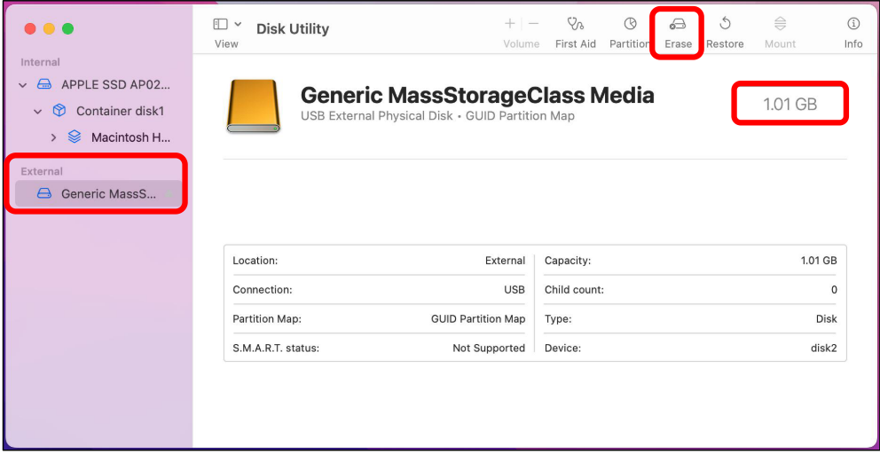Select the configuration as shown in the figure below, and then click “Erase”.
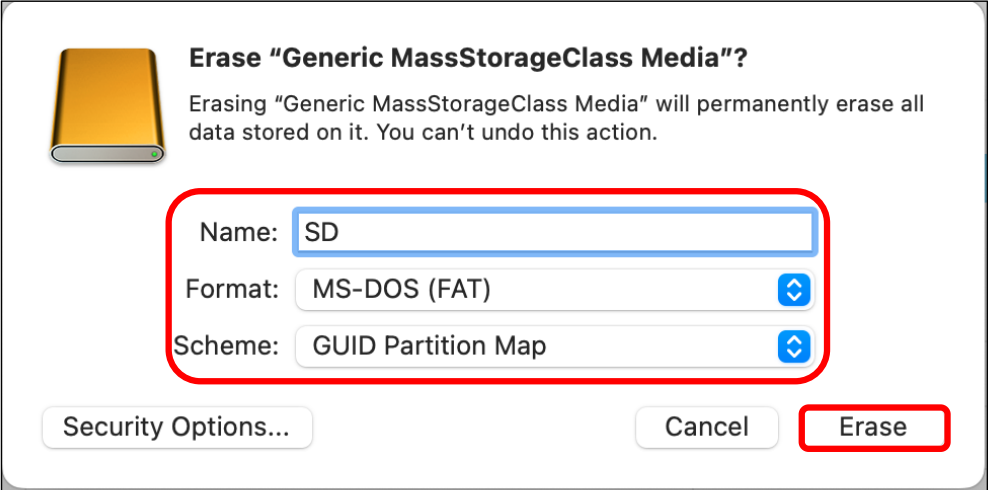Wait for the formatting to complete. When finished, it will look like the picture below. At this point, you can see a new disk on the desktop named “SD”.
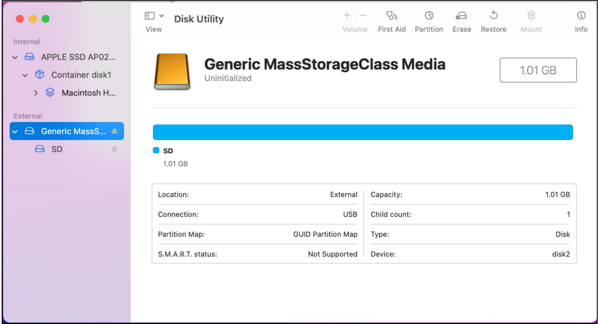Connect
Connect ESP32-S3 to the computer using the USB cable.

Before connecting the USB cable, insert the SD card into the SD card slot on the back of the ESP32-S3.
Sketch
Sketch_21.1_SDMMC_Test
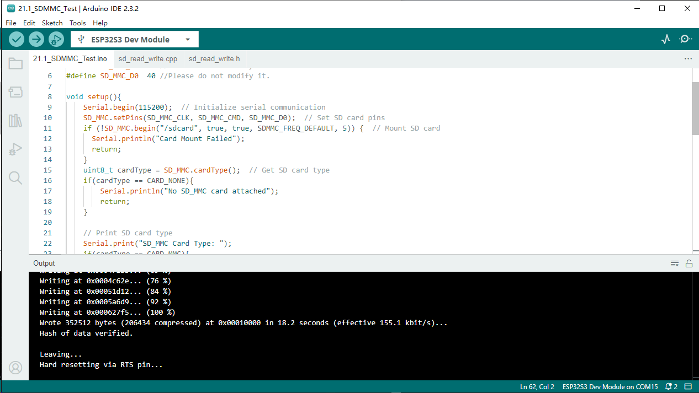Compile and upload the code to ESP32-S3-WROOM, open the serial monitor, and press the RST button on the board. You can see the printout as shown below.
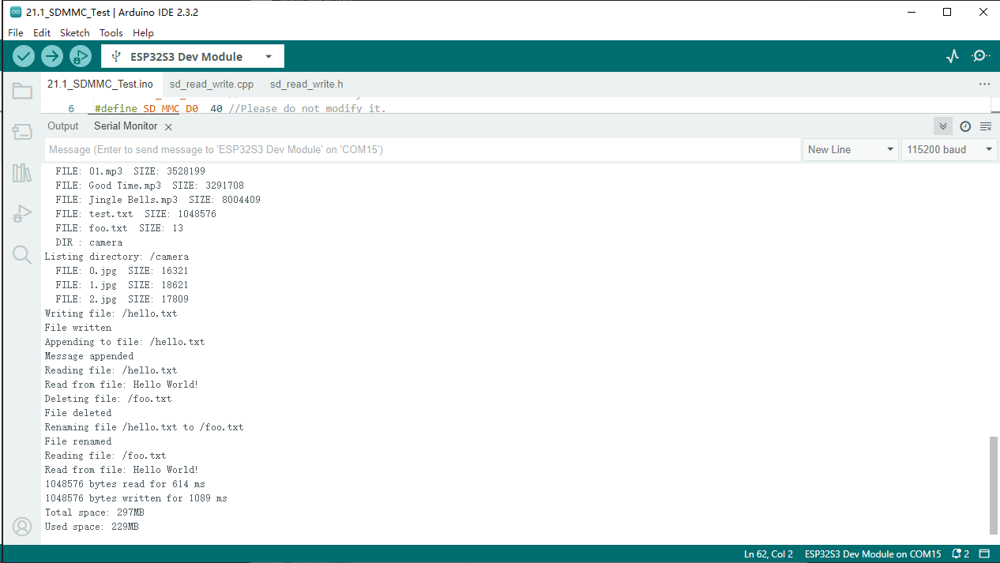Code
The following is the program code:
#include "sd_read_write.h"
#include "SD_MMC.h"
#define SD_MMC_CMD 38 //Please do not modify it.
#define SD_MMC_CLK 39 //Please do not modify it.
#define SD_MMC_D0 40 //Please do not modify it.
void setup(){
Serial.begin(115200); // Initialize serial communication
SD_MMC.setPins(SD_MMC_CLK, SD_MMC_CMD, SD_MMC_D0); // Set SD card pins
if (!SD_MMC.begin("/sdcard", true, true, SDMMC_FREQ_DEFAULT, 5)) { // Mount SD card
Serial.println("Card Mount Failed");
return;
}
uint8_t cardType = SD_MMC.cardType(); // Get SD card type
if(cardType == CARD_NONE){
Serial.println("No SD_MMC card attached");
return;
}
// Print SD card type
Serial.print("SD_MMC Card Type: ");
if(cardType == CARD_MMC){
Serial.println("MMC");
} else if(cardType == CARD_SD){
Serial.println("SDSC");
} else if(cardType == CARD_SDHC){
Serial.println("SDHC");
} else {
Serial.println("UNKNOWN");
}
// Print SD card size
uint64_t cardSize = SD_MMC.cardSize() / (1024 * 1024);
Serial.printf("SD_MMC Card Size: %lluMB\n", cardSize);
listDir(SD_MMC, "/", 0); // List root directory contents
createDir(SD_MMC, "/mydir"); // Create a directory
listDir(SD_MMC, "/", 0); // List root directory again
removeDir(SD_MMC, "/mydir"); // Remove the created directory
listDir(SD_MMC, "/", 2); // List root directory with depth 2
writeFile(SD_MMC, "/hello.txt", "Hello "); // Write to a file
appendFile(SD_MMC, "/hello.txt", "World!\n"); // Append to the file
readFile(SD_MMC, "/hello.txt"); // Read the file
deleteFile(SD_MMC, "/foo.txt"); // Delete a file (if it exists)
renameFile(SD_MMC, "/hello.txt", "/foo.txt"); // Rename a file
readFile(SD_MMC, "/foo.txt"); // Read the renamed file
testFileIO(SD_MMC, "/test.txt"); // Perform I/O test on a file
// Print total and used space on the SD card
Serial.printf("Total space: %lluMB\r\n", SD_MMC.totalBytes() / (1024 * 1024));
Serial.printf("Used space: %lluMB\r\n", SD_MMC.usedBytes() / (1024 * 1024));
}
void loop(){
delay(10000); // Wait for 10 seconds
}